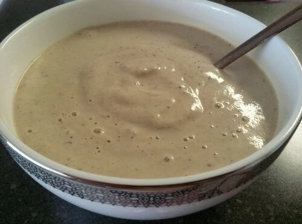
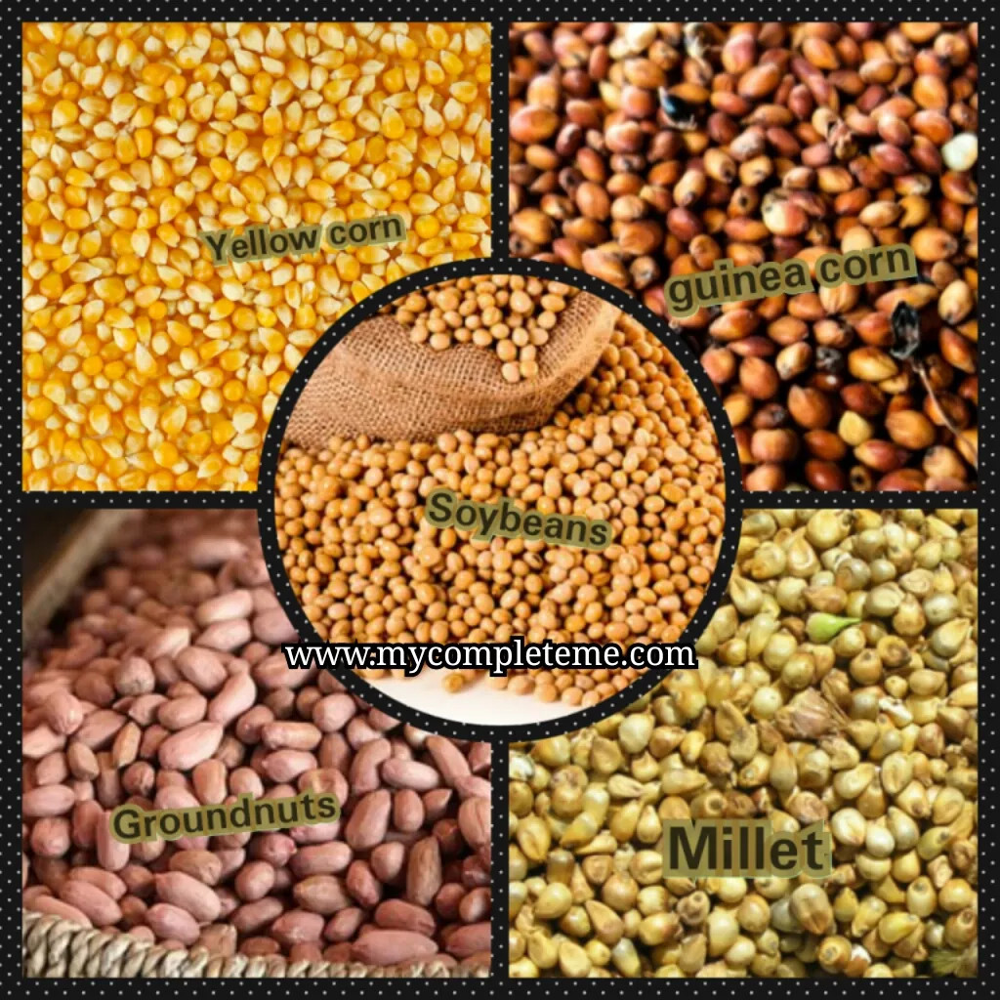

Tom Brown


Tom Brown Recipe
Tom Brown —the thick brown powder is a combination of yellow corn, millet, guinea corn (cereals), groundnut (peanuts) and soy beans (legumes). it’s one meal that is essential for babies if you want to wean them and want them looking well fed after breast milk.
This cereal is also good for adults who always have busy schedules and may have to leave very early in the morning to their place of work. It’s just a 5 minutes meal. This will save you time especially if you are on the go.
Also, because of its rich contents, this fiber makes you feel fuller for long causing you to focus on your most important tasks for the day.
Just like Kunu Tsamiya, it’s nutritional benefits are of immense value. It consists of protein, iron, magnesium, potassium, carbohydrate, vitamin B6 and Vitamin B12 and lot more.
You don’t feel like cooking? Simply prepare Tom Brown.
Ingredients for making Tom brown food/cereal
- Millet
- Guinea corn
- Yellow corn
- Soybeans
- Groundnut/pea nuts.
Optional Ingredients:
- Crayfish.
- Dates (sweetener)
Steps to prepare Tom Brown powder from the scratch
- Get dried yellow corn and guinea corn(sorghum), remove the stones and other foreign particles amongst the corn, then roast both on fire until its turned golden brown. Don’t let it pop like popcorn, when done, remove it, let it cool.
- Now, roast the groundnut. (The quantity is based on how much cereals you will use)
- Roast the millet and the soya beans separately till it becomes brown. Don’t forget to remove the stones and other foreign particles first.
- When done with roasting of the soya beans, grind it softly with mortal and pestle to remove the chaff. It is very important you sift the chaff away after you are done with grinding.
- let all the Ingredients get cool.
- Combine all the ingredients and blend the mixture with a high power blender or a local mill to blend. Don’t add water, at least not yet!
- Tom brown powder is ready! Pour it inside a dry container to preserve it.
for complete guide on the complete recipe please refer the this link click me